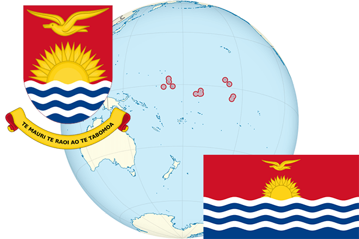

To`liq nomi: Kiribati
Region: Okeaniya
Qonunchilik shakli: Respublika
Mustaqillik kuni: 12-iyul 1979 -yil (Birlashgan Qirollikdan)
Poytaxt: Janubiy Tarava
Maydoni: 812,34 km² (dunyoda 197 -o`rinda )
Chegaradosh davlatlari: yo`q
Aholisi: 103 058 (dunyoda 197 - o`rinda, 2010 -yil roʻyxat)
Aholi zichligi: 126,87/km²
Aholining o`rtacha yoshi: 62,5 yil ( 65,6 ayollar, 59,4 erkaklar)
Rasmiy tili: Ingliz va Kiribati tili
Dini: protestant va katolik
Pul birligi: Avstraliya dollari
Telefon prefiksi: +686
Internet domen: .ki
Xalqaro tashkilotlarga a`zoligi: BMT (1999 – yildan)
Dengiz va okeanlarga chiqishi: Tinch okeani
YIM: Butun: $ 180 mln, Jon boshiga $ 1782 (2011 - yil roʻyxati)
Yirik shaharlari: Janubiy Tarava